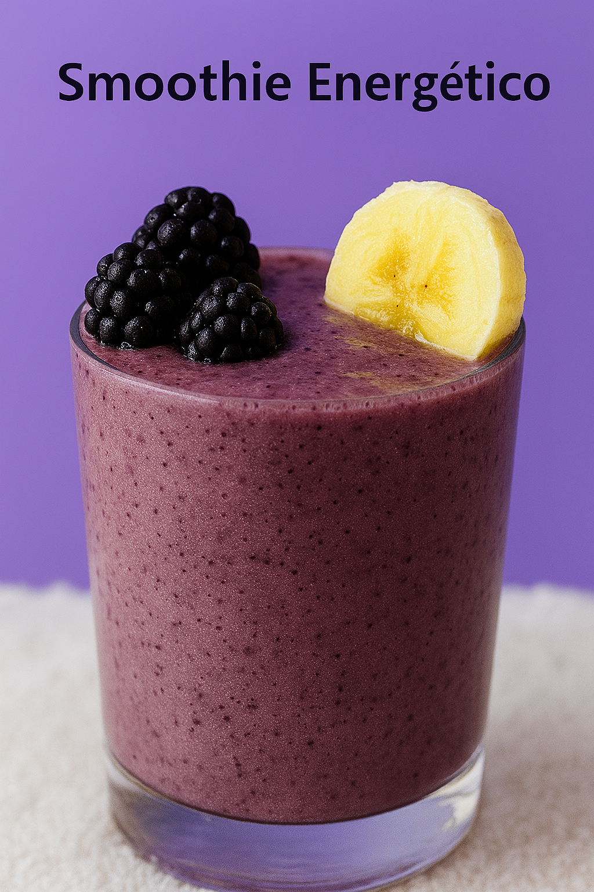
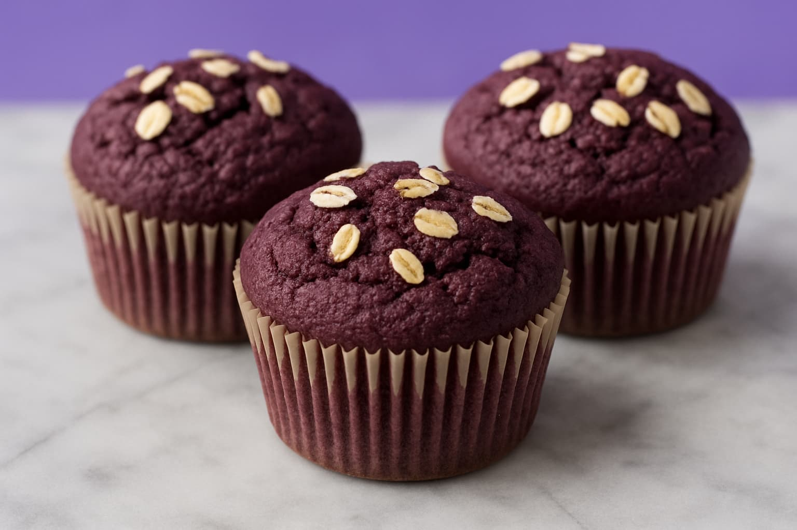
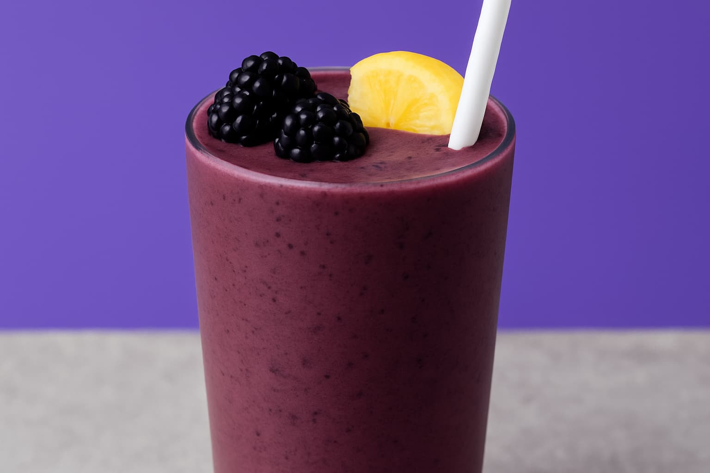
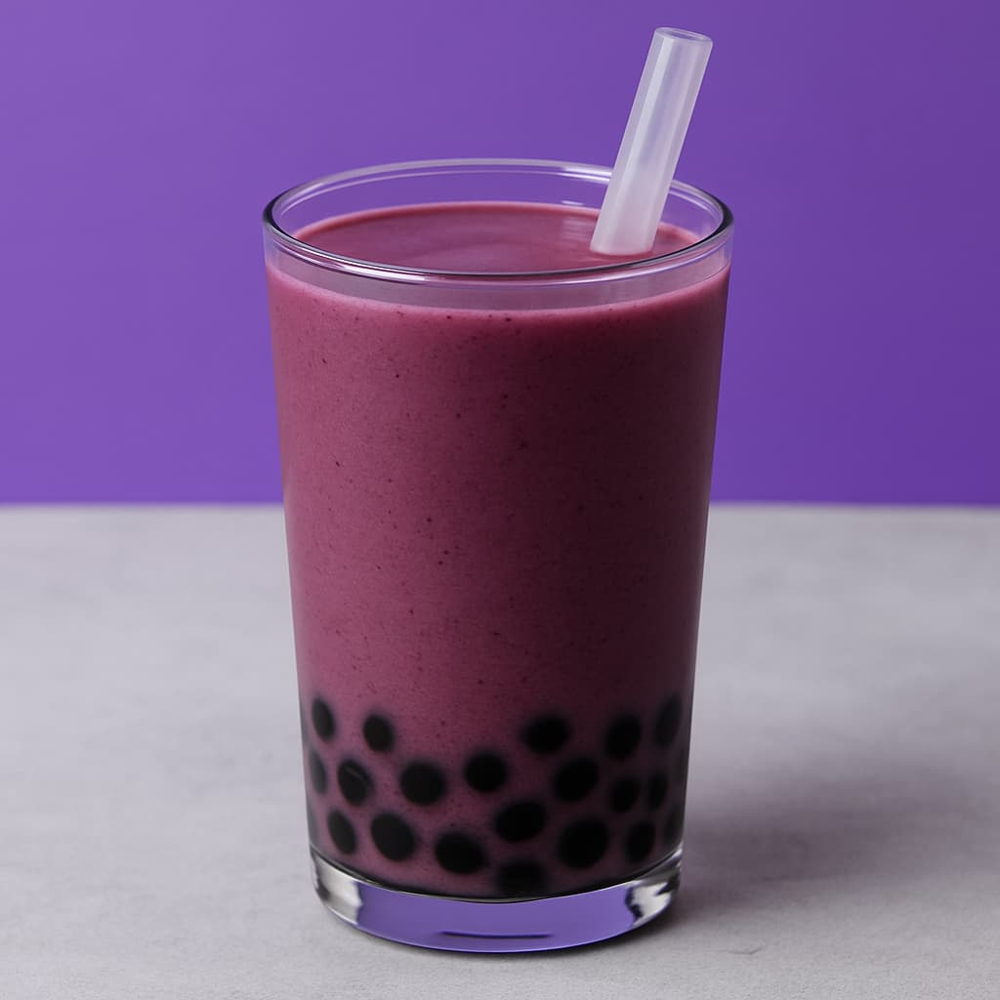
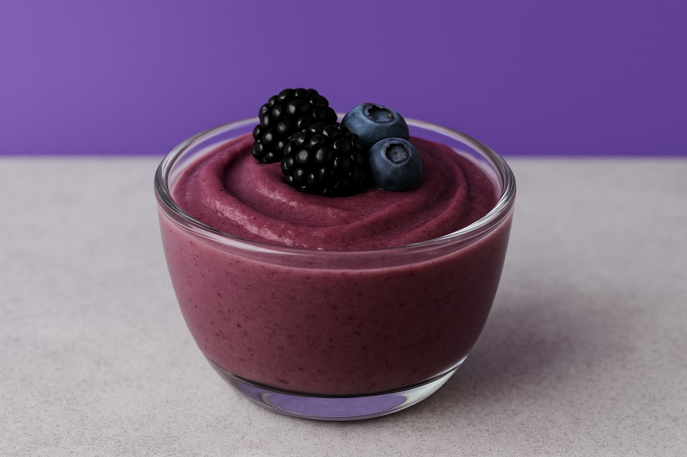
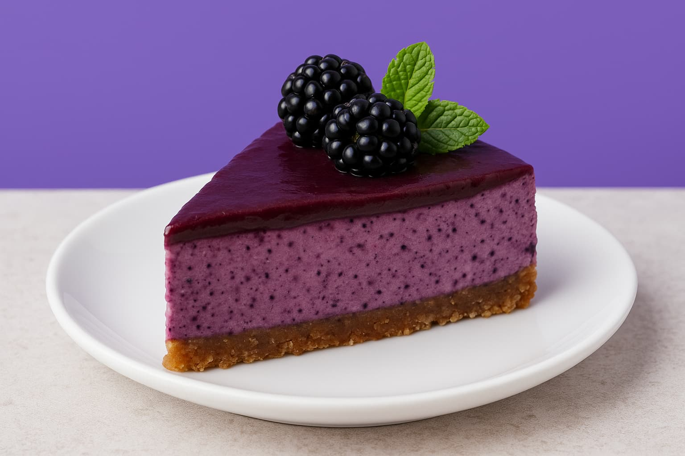
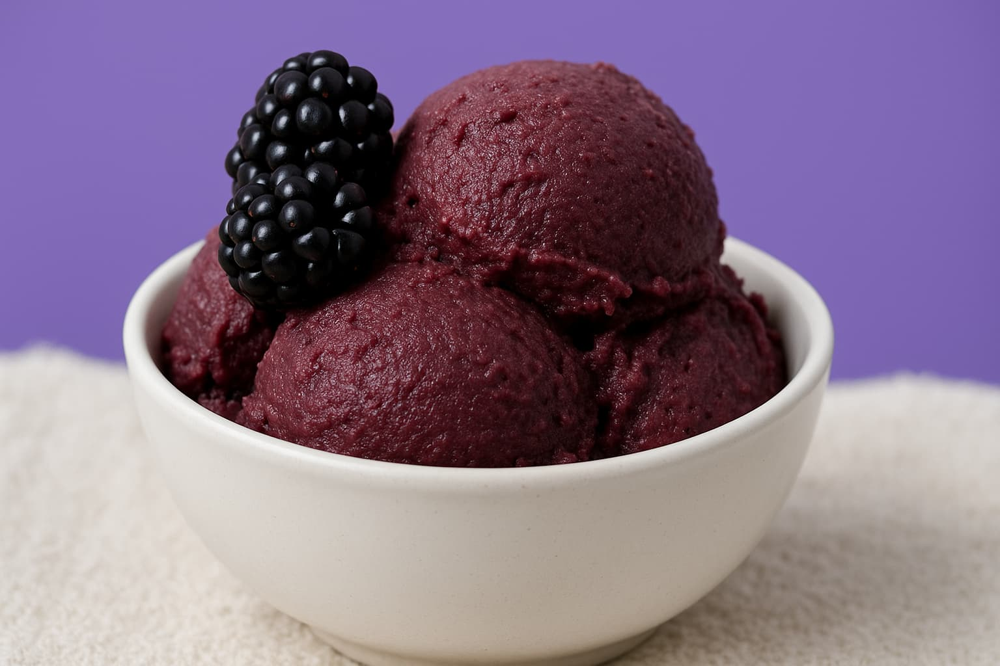
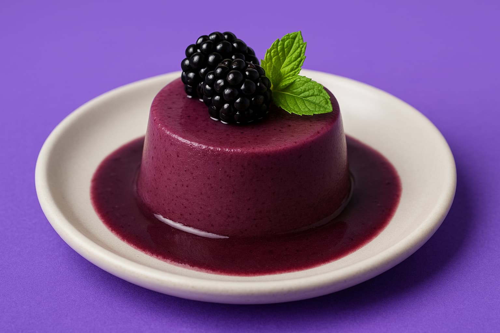

Café da Manhã
Smoothie Energético
Ingredientes:
- 2 scoops de OverBerry
- 1 banana
- 200ml leite vegetal
- 1 colher mel

Café da Manhã
Açaí Bowl Completo
Ingredientes:
- 3 scoops de OverBerry
- Banana congelada
- Granola artesanal
- Frutas vermelhas
Café da Manhã
Panqueca de Açaí
Ingredientes:
- 2 scoops de OverBerry
- 1 ovo
- 1/2 xícara farinha aveia
- Leite vegetal
Café da Manhã
Overnight Oats Açaí
Ingredientes:
- 2 scoops de OverBerry
- 1/2 xícara aveia
- Leite de coco
- Chia

Café da Manhã
Muffin de Açaí
Ingredientes:
- 3 scoops de OverBerry
- Farinha integral
- Banana amassada
- Óleo de coco

Bebidas
Vitamina Pré-Treino
Ingredientes:
- 2 scoops de OverBerry
- Água gelada
- 1 colher aveia
- Canela

Bebidas
Limonada de Açaí
Ingredientes:
- 1 scoop de OverBerry
- Suco de limão
- Água com gás
- Hortelã fresca

Bebidas
Shake Proteico de Açaí
Ingredientes:
- 2 scoops de OverBerry
- Whey protein
- Leite desnatado
- Pasta de amendoim

Bebidas
Água Saborizada Açaí
Ingredientes:
- 1 scoop de OverBerry
- 500ml água gelada
- Gotas de limão
- Gelo

Bebidas
Bubble Tea de Açaí
Ingredientes:
- 2 scoops de OverBerry
- Leite de coco
- Bolinhas de tapioca
- Mel

Sobremesas
Mousse de Açaí
Ingredientes:
- 3 scoops de OverBerry
- Creme de leite
- Açúcar cristal
- Gelatina incolor

Sobremesas
Cheesecake de Açaí
Ingredientes:
- 4 scoops de OverBerry
- Cream cheese
- Biscoito triturado
- Manteiga

Sobremesas
Sorvete Caseiro de Açaí
Ingredientes:
- 3 scoops de OverBerry
- Leite condensado
- Creme de leite
- Banana

Sobremesas
Pudim de Açaí
Ingredientes:
- 3 scoops de OverBerry
- Leite integral
- Ovos
- Açúcar para calda

Lanches
Barra de Cereal Açaí
Ingredientes:
- 2 scoops de OverBerry
- Aveia em flocos
- Castanhas mistas
- Mel
Lanches
Bolinhas Energéticas
Ingredientes:
- 2 scoops de OverBerry
- Tâmaras sem caroço
- Castanha de caju
- Coco ralado
Lanches
Cookie Funcional
Ingredientes:
- 2 scoops de OverBerry
- Farinha de amêndoas
- Óleo de coco
- Chocolate 70%
Lanches
Pão de Açaí Fit
Ingredientes:
- 3 scoops de OverBerry
- Farinha integral
- Fermento biológico
- Azeite extravirgem

Pós Treino
Smoothie Recovery
Ingredientes:
- 3 scoops de OverBerry
- Whey protein
- Banana
- Leite de amêndoas

Pós Treino
Bowl Proteico Açaí
Ingredientes:
- 3 scoops de OverBerry
- Quinoa cozida
- Pasta de amendoim
- Sementes de chia
Pós Treino
Shake Recuperação
Ingredientes:
- 2 scoops de OverBerry
- BCAA
- Água de coco
- Creatina
Mais receitas chegando em breve!